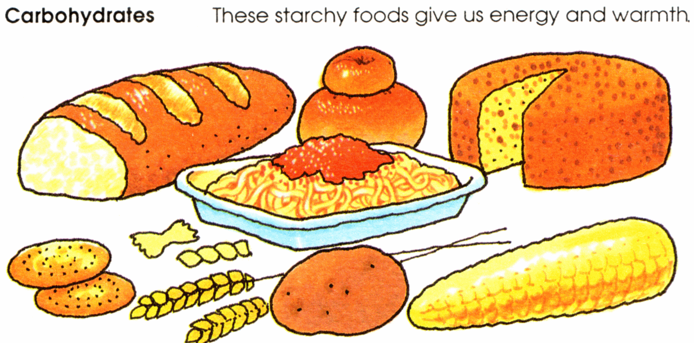
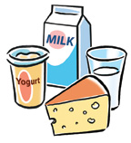
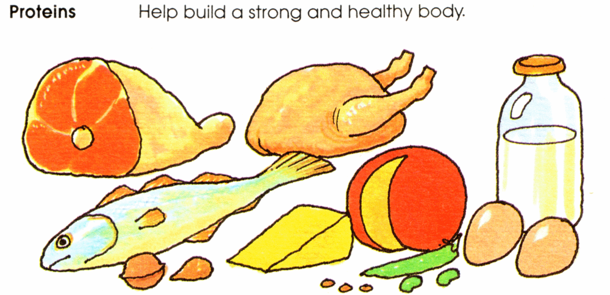
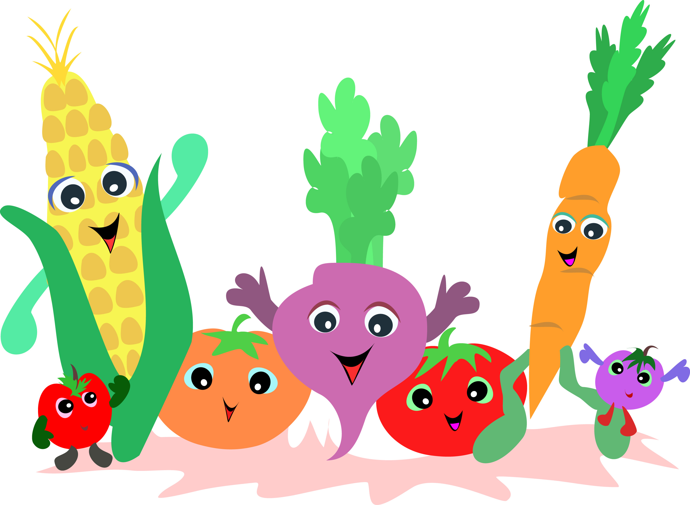
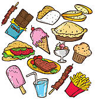

Food Groups + Carbohydrates
Different food groups have different effects on your body. Having diabetes does not stop you from eating any types of food. Everybody with or without diabetes should try their best to eat a healthy balanced diet. Below are some useful tips on what types of food you should eat more of than others.
Carbohydrates

Examples of theses types of foods include cereal, rice potatoes, pasta and bread! These foods give you energy to go about your dat. They keep your glucose stores full. Carbohydrates should be eaten at every meal and as a snack throughout the day.
Dairy
Milk, cheese and yogurt are examples of dairy foods. They help your bones grow strong. You should try and eat some of these foods everyday.
Proteins
Proteins incluse all kinds of meat, fish and eggs. They help you to grow strong. They should be eaten everyday.
Fruit and Veg

Fruit and vegetables are an important part of everyday life! They make you fit and healthy. You should try and eat at least 5 pieces of fruit and veg a day.
Snacks
Sweets, chocolate, crisps, chips and ice cream can fall under this category. Everyone loves these kinds of foods but they don't really help people to keep healthy. These can be eaten as treats but not lots every day.
Carbohydrate Counting
Why does your body need carbohydrates?
Carbohydrates are the body's preferred source of energy. All carbs are broken down into glucose - essential fuel for the body, especially the brain. High-fibre carbohydrates such as whole grains and fruit play an important role in the health of the gut.
Jack and Francesca both have diabetes. They have learned which foods that they like have carbohydrates in them. Jack - "When I have a meal or snack I check how much carbohydrates in the foods I'm eating.Then I can work out exactly how much insulin I need to take. It's called counting carbohydrates".